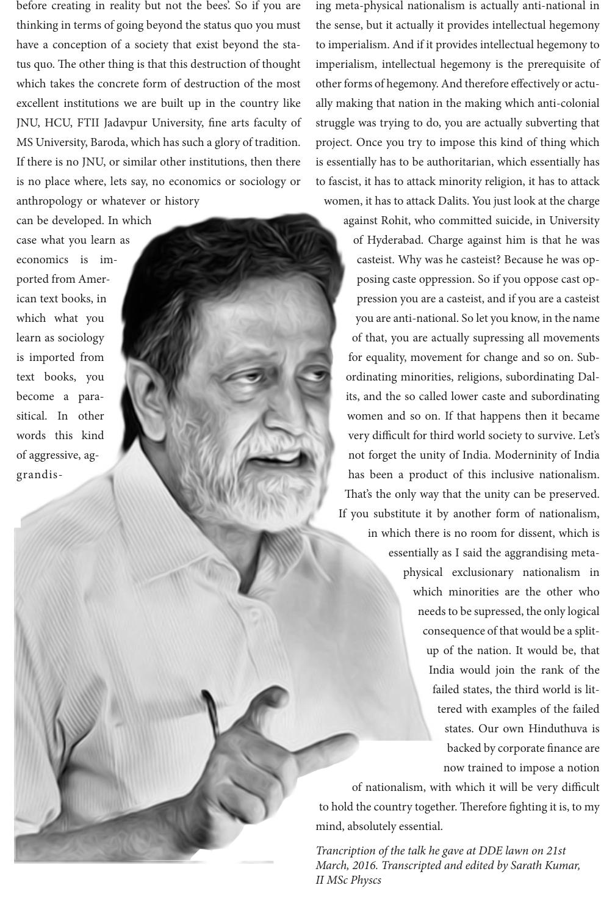

before creating in reality but not the bees’. So if you are
thinking in terms of going beyond the status quo you must
have a conception of a society that exist beyond the sta-
tus quo. e other thing is that this destruction of thought
which takes the concrete form of destruction of the most
excellent institutions we are built up in the country like
JNU, HCU, FTII Jadavpur University, ne arts faculty of
MS University, Baroda, which has such a glory of tradition.
If there is no JNU, or similar other institutions, then there
is no place where, lets say, no economics or sociology or
anthropology or whatever or history
can be developed. In which
case what you learn as
economics is im-
ported from Amer-
ican text books, in
which what you
learn as sociology
is imported from
text books, you
become a para-
sitical. In other
words this kind
of aggressive, ag-
grandis-
ing meta-physical nationalism is actually anti-national in
the sense, but it actually it provides intellectual hegemony
to imperialism. And if it provides intellectual hegemony to
imperialism, intellectual hegemony is the prerequisite of
other forms of hegemony. And therefore eectively or actu-
ally making that nation in the making which anti-colonial
struggle was trying to do, you are actually subverting that
project. Once you try to impose this kind of thing which
is essentially has to be authoritarian, which essentially has
to fascist, it has to attack minority religion, it has to attack
women, it has to attack Dalits. You just look at the charge
against Rohit, who committed suicide, in University
of Hyderabad. Charge against him is that he was
casteist. Why was he casteist? Because he was op-
posing caste oppression. So if you oppose cast op-
pression you are a casteist, and if you are a casteist
you are anti-national. So let you know, in the name
of that, you are actually supressing all movements
for equality, movement for change and so on. Sub-
ordinating minorities, religions, subordinating Dal-
its, and the so called lower caste and subordinating
women and so on. If that happens then it became
very dicult for third world society to survive. Let’s
not forget the unity of India. Moderninity of India
has been a product of this inclusive nationalism.
at’s the only way that the unity can be preserved.
If you substitute it by another form of nationalism,
in which there is no room for dissent, which is
essentially as I said the aggrandising meta-
physical exclusionary nationalism in
which minorities are the other who
needs to be supressed, the only logical
consequence of that would be a split-
up of the nation. It would be, that
India would join the rank of the
failed states, the third world is lit-
tered with examples of the failed
states. Our own Hinduthuva is
backed by corporate nance are
now trained to impose a notion
of nationalism, with which it will be very dicult
to hold the country together. erefore ghting it is, to my
mind, absolutely essential.
Trancription of the talk he gave at DDE lawn on 21st
March, 2016. Transcripted and edited by Sarath Kumar,
II MSc Physcs